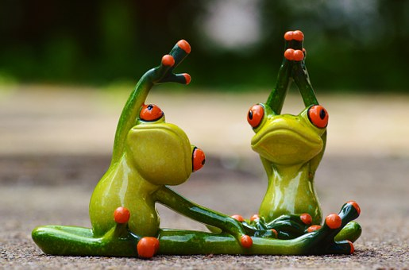

Healthy Living - Your Health
Being overweight or obese can lead to many health problems, including diabetes, heart disease, stroke, high blood pressure,
arthritis and even cancer. The good news is that losing even a few pounds can cut these risks.
Use more calories than you take in.
- The number of calories a person needs depends on age, gender and activity level. Most adults need 2,000 or fewer
calories each day.
- If you take in more calories than you use, you will gain weight over time.
- If you use more calories than you take in, you will lose weight over time.
Do it for life.
- To lose weight and keep it off, make small changes you can stick with long term.

What is a Fit Bit?
A "Fit Bit" is slang for an attractive person who is also fit to boot.
FitBit is also a form of wearable technology that helps tracks every part of your day—including activity, exercise, food, weight and sleep—to help you find your fit, stay motivated, and see how small steps make a big impact.

How to be a Fit Bit?
Following a healthy lifestyle can help you prevent overweight and obesity. Many lifestyle habits begin during childhood. Thus, parents and families should encourage their children to make healthy choices, such as following a healthy diet and being physically active.
Make following a healthy lifestyle a family goal. For example:
Follow a healthy eating plan. Make healthy food choices, keep your calorie needs and your family's calorie needs in mind, and focus on the balance of energy IN and energy OUT.
Focus on portion size. Watch the portion sizes in fast food and other restaurants. The portions served often are enough for two or three people. Children's portion sizes should be smaller than those for adults. Cutting back on portion size will help you balance energy IN and energy OUT.
Be active. Make personal and family time active. Find activities that everyone will enjoy. For example, go for a brisk walk, bike or rollerblade, or train together for a walk or run.
Reduce screen time. Limit the use of TVs, computers, DVDs, and videogames because they limit time for physical activity. Health experts recommend 2 hours or less a day of screen time that's not work- or homework-related.
Keep track of your weight, body mass index, and waist circumference. Also, keep track of your children's growth.